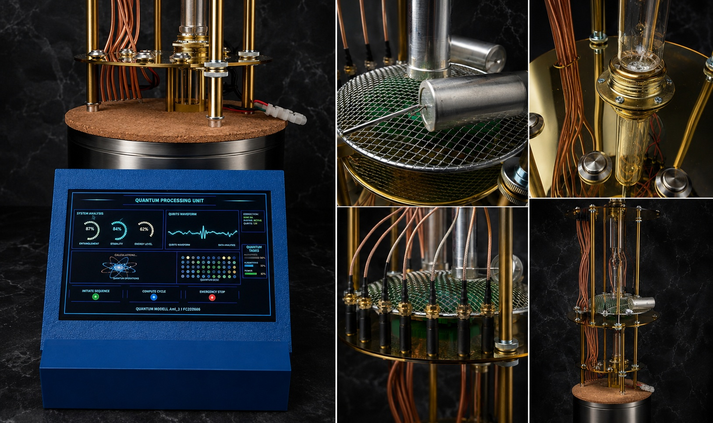
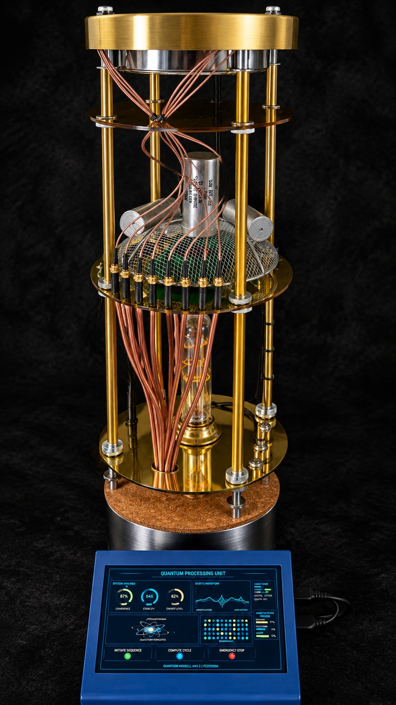

Quantum Pi
A Raspberry Pi-based quantum-computer simulation and monitoring demonstrator created as the final project of my Quantum Computing course at the University of Chicago.

Overview
Quantum Pi is an experimental hardware demonstrator built to visualise how the control and monitoring interface of a quantum computer could look and behave.
The project does not attempt to reproduce real quantum hardware. Instead, a Raspberry Pi simulates the system states and presents them through a dedicated touchscreen interface.
The model was created as the final project of my Quantum Computing course at the University of Chicago and was designed to turn theoretical concepts into a physical and visual demonstration.
Project details
Quantum computing is normally presented through mathematical models, circuit diagrams and software simulations. For the final course project, I wanted to create something physical that could make the idea of operating and monitoring a quantum system more tangible.
A Raspberry Pi acts as the central controller of the demonstration system. Instead of controlling real qubits, it generates simulated quantum-computer states and system information that are then visualised on the integrated touchscreen.
The interface is designed to resemble a monitoring console. It can present different system states, operating parameters and changing values in real time, creating the impression of observing a small quantum-computing installation.
The project therefore acts as a show model: it combines physical hardware, interface design and simulated quantum concepts into a compact demonstrator that can be presented without access to an actual quantum computer.
Quantum-state simulation
The Raspberry Pi generates simulated system states rather than controlling actual quantum hardware.
Monitoring concept
The interface explores how status information and operational data from a quantum-computing system might be presented.
Touchscreen interface
An integrated touchscreen displays the different simulated states and allows the system to be experienced as a compact standalone installation.
Raspberry Pi
The Raspberry Pi handles the simulation logic, user interface and presentation of the changing system data.
Physical demonstrator
The project transforms an abstract topic into a physical object that can be demonstrated and explained to other people.
Course final project
Quantum Pi was developed as the final project of my Quantum Computing course at the University of Chicago.
Simulation concept
A real quantum computer requires an extensive technical infrastructure around the quantum processor itself. Operators do not simply interact directly with individual qubits; they rely on control software, status information and monitoring systems.
Quantum Pi explores this interface layer from a conceptual point of view.
The Raspberry Pi generates changing simulated values and states, which are presented through the touchscreen as if they were coming from a quantum-computing system.
This creates a visual representation of how an operator might observe different operating states rather than trying to imitate the underlying quantum physics in hardware.
Technology
Quantum Pi is built around a Raspberry Pi combined with a compact touchscreen display.
The Raspberry Pi executes the simulation logic and generates the values shown by the monitoring interface. The display provides the visual layer for system status, simulated quantum states and other operating information.
The project combines software simulation with embedded hardware and interface design, allowing the entire demonstrator to run as a self-contained system.
The main focus was not to emulate the enormous complexity of a real quantum computer, but to build an understandable visual model of how a control and monitoring environment could be represented.